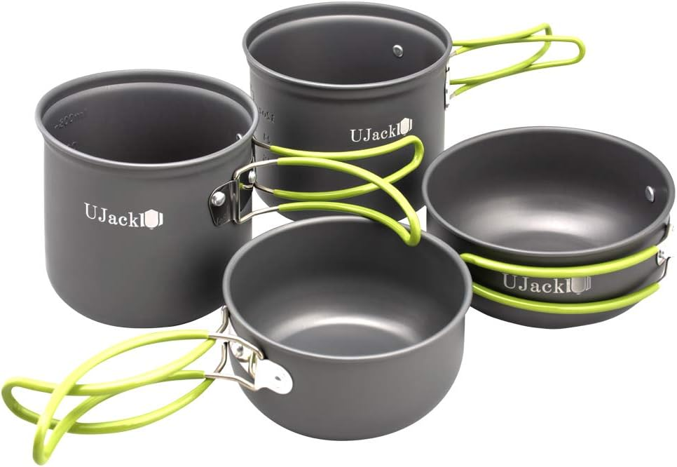
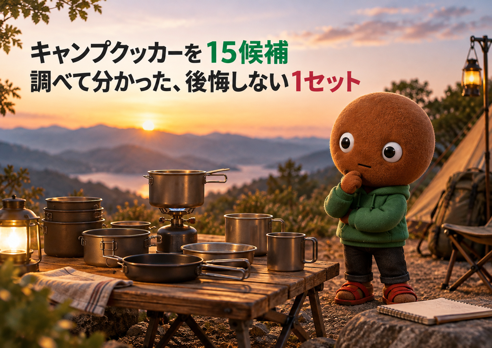
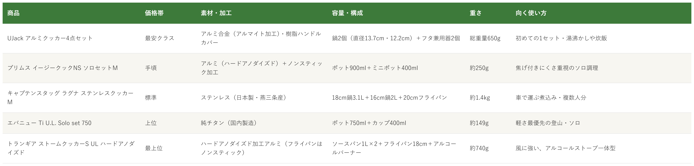

Amazonで見るクッカーを選べず、焦げ付き・重さ・サイズで買って後悔したくない人へ
そのクッカー、
素材と人数で選んでいますか？
素材・容量・用途・重さまで、キャンプ・登山用のクッカーセット15候補を調査。素材と使い方が重複しない5商品を比較しました。
自分に合うクッカーを探す
この記事はAmazonアソシエイト・プログラムの参加者として、紹介料を得る場合があります（PR）。仕様は調査時点の情報です。
15候補から、選び方の違う5商品に絞りました。まずは気になる1つへ。向いている人・向いていない人と、低評価レビューもまとめています。
15候補を調査
5商品に厳選
低評価レビューも確認済み
結論から先に言うと：
素材・人数・軽さ、何を優先するかで1つを。
横にスワイプして、5商品を見比べる
選び方の基準は3つ
調べてわかったのは、基準は3つでした。
1つ目は「素材」。アルミは軽くて扱いやすい一方、傷や凹みが出やすい素材です。ステンレスは頑丈ですが重くなります。チタンは軽くて錆びにくい反面、熱伝導率が低く焦げつきやすいと、BE-PALの記事で紹介されています。今回の5商品は、アルミ・ステンレス・チタンがそろいました。
2つ目は「容量と人数」。ソロ用は750〜900mlのポット中心で、袋麺や1人分の炊飯が目安です。2人分以上の煮込みなら、キャプテンスタッグのように2L以上の鍋があると安心です。今回の5商品は、750mlのソロ用から3.1Lの鍋まで幅があります。
3つ目は「熱源との相性と焦げ付き」。ほとんどはガスバーナーなどで使いますが、トランギアは専用のアルコールバーナーが一体です。アルコールは火力調整が難しく、30分以上の煮込みには向きません。フライパンは、5商品中1商品（キャプテンスタッグ）で耐火性が弱点として挙がりました。
比較表

価格帯・素材・容量・重さ・向く使い方の比較（価格帯は最安クラス〜最上位の5段階。内容は商品ごとに異なります）
UJack アルミクッカー4点セット
- 最安クラス
- 鍋2個（直径13.7cm・12.2cm）＋フタ兼用器2個・総重量650g
- アルミ合金（アルマイト加工）、樹脂ハンドルカバー・メッシュポーチ付き
プリムス イージークックNS ソロセットM
- 手頃
- ポット900ml＋ミニポット400ml・約250g
- ハードアノダイズド＋ノンスティック加工、注ぎ口付き
キャプテンスタッグ ラグナ ステンレスクッカーM
- 標準
- 18cm鍋3.1L・16cm鍋2L・20cmフライパン・約1.4kg
- 燕三条産のステンレス、煮込み・複数人分向け
エバニュー Ti U.L. Solo set 750
- 上位
- ポット750ml＋カップ400ml・約149g
- 純チタン製の超軽量、シリコン付き取っ手
トランギア ストームクッカーS UL
- 最上位
- ソースパン1L×2＋フライパン＋アルコールバーナー・約740g
- 風防・五徳・バーナー一体、風に強い
向いてる人
- 初めてキャンプ用のクッカーをそろえる人
- 湯沸かしや炊飯、袋麺など、ソロの簡単な調理をしたい人
向いてない人
- 大人数の料理を一度に作りたい人（鍋は直径13.7cmと12.2cmの小ぶりなサイズ）
- 傷や凹みが気になる人（アルミは傷や凹みが出やすい素材）
選ぶ決め手まず安く一式そろえてキャンプ飯を始めたいなら、これが一番ハードルの低い選択です。
低評価レビューを調べました
Amazonの商品ページで確認できた範囲では、★3のレビューが1件ありました。使えるものの、家の調理道具で足りるのでキャンプ用にわざわざ買う必要は感じなかった、思ったより大きかったという内容です。焦げ付きや加工のはがれなど、具体的な不具合の指摘は見当たりませんでした。
参考：Amazon商品ページのレビュー（★3）
UJackのアルミクッカーセットは、
とにかく安く鍋とフタまで
一式そろえたい人に最適な1セットです。
アルミ合金（アルマイト加工）で、
鍋は直径13.7cmと12.2cm、
フタ兼用器が大小1つずつ付きます。
総重量は650g、
メッシュポーチ付きです。
向いてる人
- ソロでごはんや袋麺を作る人
- 洗い物の手間をなるべく減らしたい人
向いてない人
- 2人分以上を一度に作りたい人（ポットは900ml）
- コーティングのはがれが気になる人（レビューに加工のはがれの指摘あり）
選ぶ決め手焦げ付きと後片付けの手間を減らして、ソロ調理を楽にしたいなら、このセットが第一候補です。
低評価レビューを調べました
Amazonのレビューには、小さいほうの鍋の加工がはがれていて残念だったという声（★3）がありました。また、ミニポットのフタが隙間なく閉まるため、少し開けて蓋をしたい時に使いにくいという声もありました。
参考：Amazon商品ページのレビュー（★3など）
プリムスのイージークックNS・ソロセットMは、
焦げ付きにくさを重視して
軽いソロ用をそろえたい人に最適な1セットです。
アルミにハードアノダイズド加工と
ノンスティック加工で、
ポット900ml・ミニポット400mlです。
重さは約250g、
ポットには注ぎ口が付きます。
向いてる人
- 車で行くキャンプで、煮込みや汁物を作りたい人
- 頑丈で長く使えるクッカーがほしい人
向いてない人
- 荷物を軽くしたい登山・ソロの人
- フライパンで強火の料理をしたい人（フライパンの耐火性に指摘あり）
選ぶ決め手2人以上でしっかり煮込み料理を作るなら、頑丈なこのセットが安心です。
低評価レビューを調べました
Amazonのレビューで目立ったのは、フライパンの耐火性についてです。カセットコンロで使うと鍋底がすぐ焦げて赤く熱くなり、油に引火する危険があるため注意が必要という指摘がありました（★3、23人が参考になったと評価）。大小の鍋は問題なく使えるとのことです。このレビューはLサイズでの投稿です。
参考：Amazon商品ページのレビュー（★3）
キャプテンスタッグのラグナ ステンレスクッカーMは、
丈夫なステンレスで煮込みや
複数人分を作りたい人に最適な1セットです。
燕三条産のステンレスで、
18cm鍋3.1L・16cm鍋2L・
20cmフライパンのセットです。
セット重量は約1.4kg、
収納袋付きです。
向いてる人
- 登山やULハイクで荷物を減らしたい人
- お湯を沸かす・袋麺・レトルトが中心の人
向いてない人
- 炊飯や焼き物など、焦げ付きやすい調理をしたい人（チタンは熱伝導率が低い）
- 手荒く扱いたい人（0.3mmの薄いチタンで、凹みやすいという声あり）
選ぶ決め手軽さが最優先で、お湯を沸かす使い方が中心なら、このセットが一番荷物を減らせます。
低評価レビューを調べました
BE-PALの記事では、チタンは熱伝導率が低く焦げつきやすいので炊飯は難しく、バーナーパッドや炊飯袋が便利と書かれています。Amazonのレビューには、取っ手が熱くなるので手袋やタオルが必要という声、ポットのフタの収まりが悪いという声がありました。
参考：BE-PAL「チタンUL ソロセット750」、Amazon商品ページのレビュー
エバニューのTi U.L. Solo set 750は、
軽さを最優先して荷物を減らしたい人に
最適な1セットです。
純チタン製で、
ポット750ml・カップ400mlです。
重さはポット約99g・カップ約50g、
取っ手にシリコンチューブ付きです。
向いてる人
- 風や雨のある場所で、ゆっくり調理したい人
- ガス缶を使わず、静かなアルコールストーブで調理したい人
向いてない人
- 強火で一気に調理したい人（火力は強くないという声あり）
- 30分以上の煮込みをしたい人（燃焼時間は100ccで約25分）
選ぶ決め手のんびり調理を楽しみながら、道具そのものを長く使いたいなら、このシステムが満足しやすい1セットです。
低評価レビューを調べました
Amazonのレビューには、火力は思ったほど強くないという声、鍋やフライパンが真円ではなくバリが残っているという声（★3）、収納時に中がすき間だらけなのでコーティングが傷つかない工夫が要るという声がありました。hinataの記事でも、アルコールバーナーは火力調整が難しく、燃焼時間が短いので30分以上の煮込みには向かないとされています。
参考：hinata「トランギア ストームクッカー」、Amazon商品ページのレビュー（★3など）
トランギアのストームクッカーSは、
風のある場所でも安定して調理したい人に
最適な1セットです。
ハードアノダイズド加工のアルミで、
ソースパン1L×2・フライパン18cm・
アルコールバーナーのセットです。
重さは約740g、
風防・五徳・バーナーが一体です。
15候補をどう絞った？ 調査の経緯を見る
クッカーは、素材・容量・熱源・フライパンの有無と選択肢が多く、安さだけで選ぶと、焦げ付いた・重くて持ち歩けなかったというギャップが起きやすい道具です。正直どれを選べばいいのか迷います。
なので今回、キャンプ・登山用のクッカーセットのスペックを調べて比較しました。各商品ごとに、向いてる人・向いてない人も調べているので、自分に合う1つを探してみてください。
15候補から5つに絞り込みました
クッカーは、Amazonの検索結果やBE-PALなどの記事で紹介されている定番を中心に調べました。今回はVASTLAND・プリムス・キャプテンスタッグ・エバニュー・トランギア（ストームクッカー）・スノーピーク・SOTO・コールマン・ユニフレーム（山クッカー 角型3）・TARAS BOULBA・UJack・Naturehike・Overmont・TITAN MANIA・ロゴスの15候補を調べ、素材・用途が重複しないよう5商品に絞りました。
採用したのはUJack アルミクッカー4点セット（アルミ・入門）、プリムス イージークックNS ソロセットM（ノンスティック）、キャプテンスタッグ ラグナ ステンレスクッカーM（ステンレス・煮込み）、エバニュー Ti U.L. Solo set 750（チタン・超軽量）、トランギア ストームクッカーS UL（アルコールバーナー一体）の5つです。
見送ったのは、採用した商品と素材・用途が重なるものです。たとえばSOTO・コールマン・TARAS BOULBA・VASTLAND・Naturehike・Overmontは、アルミ製のセットでUJackと重なります。スノーピークとTITAN MANIAはチタン系でエバニューと、ユニフレームの山クッカーは小型のアルミ系セットでプリムスと用途が重なります。ロゴスはハードアルマイト加工のアルミで、プリムスやトランギアと素材が重なるため見送りました。
※2026-10-22追記：公開後の在庫確認で、01枠のVASTLAND クッカー4点セット VL-CKT-01（ASIN B0B8LYQH14）がAmazonで在庫切れになっていたため、同じ最安クラスのアルミ製4点セットで、Amazon.co.jpが販売・発送しているUJack アルミクッカー4点セット（ASIN B07XY8D31B）に差し替えました。違いは、フタがフライパン代わりのVASTLANDに対し、UJackはフタ兼用器（大・小）が付く構成で、総重量は450gから650gに増えています。
低評価の商品も見ました
5商品それぞれについて、Amazon商品ページに載っている★3前後のレビューと、WebSearchで見つかった記事を確認しました。個別レビューの真偽までは検証できないため、確認できた範囲の傾向としてまとめています。
確認できた指摘は、UJackは使えるが思ったより大きいという声、プリムスの小さい鍋の加工がはがれていたという声、キャプテンスタッグのフライパンの耐火性、トランギアの仕上げと火力についての声です。エバニューは、今回確認できた範囲では★3以下は見当たらず、取っ手の熱さやフタの収まりについての声がありました。
調べてみて驚いたこと
5商品で、重さは約149gから約1.4kgまで、約9倍の差がありました。軽さを優先するとチタンになりますが、そのぶん焦げつきやすいという注意点がありました。軽さと調理のしやすさは、トレードオフでした。
また、最上位のトランギアは、レビューで火力は強くないと言われています。価格帯が上がるほど高性能という話ではなく、風に強い・静かなど、使う場面が違うだけでした。
さらに、キャプテンスタッグのフライパンは耐火性が弱点として挙がりました。セットを買う時は、鍋だけでなくフライパンやフタ兼用器の扱いも確認するのが安心です。
迷ったらこれ
ここまで読んでも迷ったら、ソロ中心で軽さ・焦げ付きにくさ・手頃さのバランスが取れた、プリムス イージークックNS ソロセットMが、初めての1セットとして一番外しにくいと考えます。2人分以上なら、キャプテンスタッグのステンレスを選ぶと安心です。
Amazonで見る→よくある質問
Q. クッカーは素材で何が違いますか。
A. アルミは軽く扱いやすい反面、傷や凹みが出やすい素材です。ステンレスは頑丈で重く、チタンは軽くて錆びにくい一方、熱伝導率が低く焦げつきやすいと言われます。
Q. ソロなら容量はどれくらいが目安ですか。
A. 今回の5商品では、ソロ用は750〜900mlのポットが中心です。プリムスのレビューには、袋麺を半分に割って入れると1人分がちょうどよいという声がありました。
Q. ガスバーナーでもアルコールストーブでも使えますか。
A. トランギアは専用のアルコールバーナーが一体のセットです。ほかの4商品はバーナーが付属しないので、お手持ちのバーナーと鍋の大きさが合うか確認してください。
Q. 焦げ付きにくいのはどれですか。
A. ノンスティック加工のプリムスと、フライパンがノンスティック加工のトランギアです。チタンは焦げつきやすいと言われます。UJackは商品ページで鍋の内側がノンスティック仕様と記載されていますが、焦げ付きにくさを確かめられるレビューは今回確認できませんでした。
Q. バーナーやガス缶も一緒に収納できますか。
A. エバニューのレビューには、110サイズのガス缶とストーブをポットの中に収めている例がありました。入るかどうかは使うバーナーによって変わるので、手持ちのサイズを確認すると安心です。
こんな記事も書いてます
ミートボーの調査部屋で他の記事も見る（全本）


出典
- BE-PAL チタンクッカー8選：bepal.net
- BE-PAL エバニュー チタンUL ソロセット750：bepal.net
- hinata トランギア ストームクッカー：hinata.me
- Amazon.co.jp UJack アルミクッカー4点セット：amazon.co.jp
- Amazon.co.jp プリムス イージークックNS ソロセットM：amazon.co.jp
- Amazon.co.jp キャプテンスタッグ ラグナ ステンレスクッカーM：amazon.co.jp
- Amazon.co.jp エバニュー Ti U.L. Solo set 750：amazon.co.jp
- Amazon.co.jp トランギア ストームクッカーS UL：amazon.co.jp